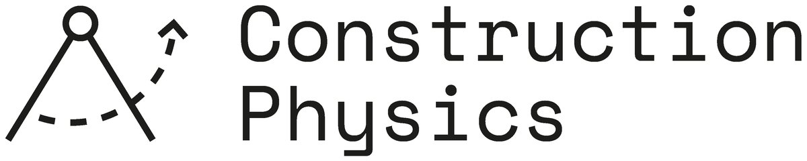
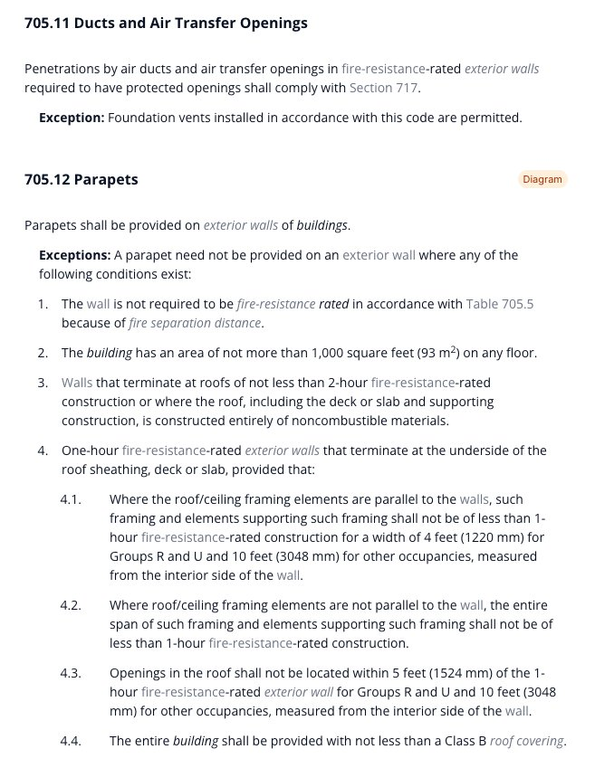
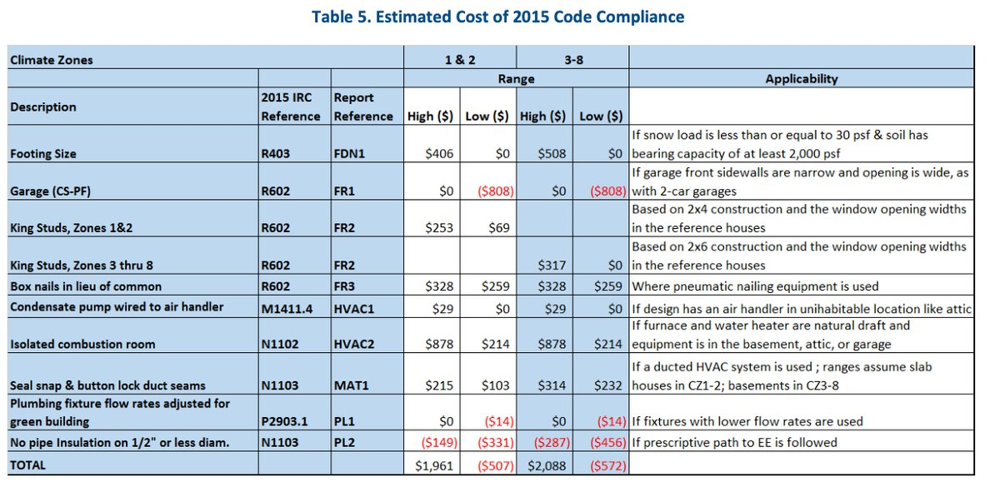
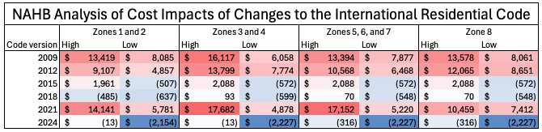
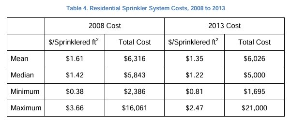
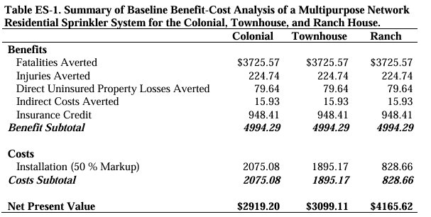
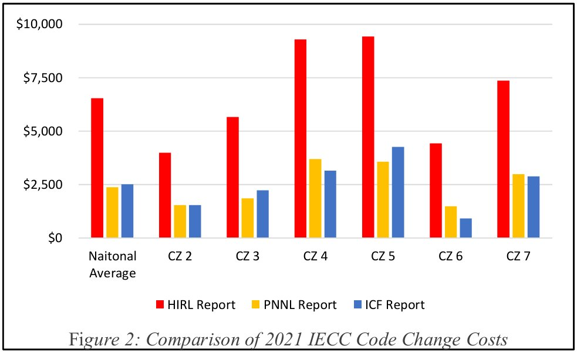

建筑规范 building codes 住房成本 监管成本 成本收益比 BCR 6 张原图

原文出处：Construction Physics —— Brian Potter 的 Substack 专栏（原文链接）。
过去二十年关于「监管推高房价」的讨论，几乎都集中在土地使用管制（land use）这条通道上。Brian Potter 指出还有第二条通道：监管通过抬高建造成本推高房价，而其中最大的单一驱动因素是建筑规范（building codes）。
按 NAHB 自己的测算：2006 年以来《国际住宅规范》(IRC) 的历次改版累计给一套新房加了约 $40,000，相当于建造成本每年被推高约 0.5%；一份针对《国际建筑规范》(IBC) 的独立研究给出每年 0.8% 的量级。
但这笔账只记了一半：喷淋救下的人命、火灾少烧的房子这些收益，在几乎所有统计口径里都没有被计入——连美国人口普查局的定质价格指数也不调整法规带来的安全升级。作者的结论不是「规范不值」，而是必须逐条做成本收益核算，而这件事至今没人完整做过。
为了弄清住房建设的监管负担、以及它在多大程度上推高了房价，人们已经花了大量力气。这里面的工作，多以这样或那样的形式，指向同一个问题：法规如何限制了新建住房的供给。比如哈佛大学的 Ed Glaeser——当今最杰出的城市经济学家之一——就深入研究过土地使用管制及其他法规在多大程度上推高房价。同样声势浩大的 YIMBY 运动，其主要着力点也是修改土地使用规则，让住房变得充足且可负担。
Much of this work is, in one form or another, about understanding how regulations restrict the supply of new housing.但土地使用限制并不是监管让住房变贵的唯一通道；监管还可以通过抬高生产住房的成本来影响房价。可能有多种法规都能起这个作用，但住房成本最大的单一监管驱动因素，几乎肯定是建筑规范（building codes）。美国几乎每一个司法辖区都有某种详尽的要求清单，任何建成的房屋都必须满足。既然建造成本占美国新建住房总成本的最大份额，那么搞清楚建筑规范在多大程度上影响了这些成本，就很有价值。
But land-use restrictions aren't the only vehicle by which regulation can make housing more expensive; regulation can also affect housing costs by driving up the costs of producing it. … the biggest regulatory driver of housing costs is almost certainly building codes.我此前写过美国建筑规范是怎么运作的，这里只做个简要回顾。高层看，大多数建筑规范的采纳由州一级完成，尽管有各种例外。一些州以下辖区（城市或县）会在州最低要求之上叠加更严格的规则，偶尔也会干脆自己制定一套规范。除此之外就有点乱了。有些州对某些建筑类型没有全州统一规范，就交给地方辖区管；活动房屋（manufactured homes）受联邦建筑规范管辖；诸如此类。
总体而言，各辖区通常不会从零开始自己写规范；相反，多数会以某个私人组织编制的示范规范（model code）为底本。例如美国几乎每个州都采纳了某种版本的《国际建筑规范》(IBC)，它由国际规范理事会 (ICC) 编写——尽管名字里带「国际」，这套规范实际上几乎只在美国使用。
On the whole, jurisdictions don't typically author their own code from scratch; instead, most will start with a model code produced by some private organization.建筑规范会规定建筑必须满足的各项要求，往往细致到令人崩溃：哪些建筑可以用哪些材料；各类房间的最小面积和尺寸；建筑必须怎样做防火保护；需要多少、什么样的保温材料。这张清单可以一直列下去。

规范编制组织通常按固定周期更新这些规范：比如《国际建筑规范》每三年更新一次。各辖区也会隔一段时间更新自己采用的版本，只是通常没有示范规范那么频繁。比如佐治亚州，大多数规范每六年更新一次。
对住宅来说，最重要的两部建筑规范大概是《国际住宅规范》(IRC，面向一户和两户住宅的示范规范) 和《国际建筑规范》(覆盖更大体量建筑施工的示范规范)。美国几乎每一个辖区都采纳了这两部规范的某个版本。其他重要的规范还有国际管道与机械官员协会的《统一机械规范》和《统一管道规范》；《国际节能规范》(IECC)；以及美国消防协会 (NFPA) 的《国家电气规范》。
在讨论各项规范要求的成本之前，得先想清楚正确的反事实。没有建筑规范，几乎肯定不意味着「你想怎么建就怎么建，毫无限制」。相反，没有监管意味着大量事实上的监管，比如保险机构和抵押贷款机构的要求。这类要求今天就已经存在——比如 Factory Mutual 的保险标准、英国的 Professional Consultant's Certificate——而且在正式监管越宽松的地方，它们会变得越有约束力。同理，工程师和建筑师这类职业的法律责任，在缺少其他监管的情况下，也会要求建筑达到各类最低标准。
The absence of a building code almost certainly wouldn't mean "you're allowed to build whatever you want with no restrictions." Instead, the absence of regulation would mean a lot of de facto regulation in the form of things like insurance or mortgage lender requirements.关于建筑规范成本效应的多数研究，都是看相对于某个基准（通常是更早一版规范）的成本变化。我所知范围内最频繁、也最详尽（尽管大概带点偏向）的研究，来自全美住宅建筑商协会 (NAHB)——一个住宅建筑商行业协会，在压低新建住宅成本这件事上投入了巨大的精力。每当《国际住宅规范》发布新版本，NAHB 都会出一份报告，逐条检视每项规范改动及其对建一栋房子成本的潜在影响。由于不同条款在不同地区影响不同（屋顶要承受多大积雪荷载的改动，对在佛罗里达盖的房子大概没影响），这些报告会考察若干栋参考住宅（reference houses）——每栋面积相同、但建在全国不同地区。NAHB 从 2009 年起就在出这类报告，因此它们为我们提供了过去二十年独栋住宅规范改动的完整视角。

下图是 2015 版 IRC 的一组分析示例。有些改动是加成本的：某些情况下要求更大的基础（footings），以及要求不同形式的风管接缝，两者各给建造成本加上估计几百美元。有些改动则是降成本的：取消部分管道的保温要求，减少了几百美元建造成本。所以相对于 2012 版 IRC，2015 版 IRC 到底是抬高还是降低你的建造成本，取决于你盖的是哪种房子。

下图给出了所分析的每个 IRC 版本在各气候区的高/低估算值。可以看到，波动很大：既取决于年份，也取决于房子建在哪儿；即便在同一个地区内，高低估算之间也可能差出不少。在最新一版 IRC 里，各项改动合起来实际上全面降低了建造成本，原因之一是像降低防潮层（vapor barrier，铺在墙里、地板上用来阻止潮气渗入建筑的材料）所需厚度这样的调整。
（值得说明的是，2009 版 IRC 的成本估算里包含了自动喷淋强制条款——由于 NAHB 的游说，这些条款在各辖区实际上并未被普遍采纳。）
| IRC 版本 | 相对上一版的成本影响（高/低估算） | 主要驱动 |
|---|---|---|
| 2009 | 约 +$6,100 ～ +$16,100 | 自动喷淋强制条款、能效要求提升、AFCI 断路器要求 |
| 2012 | 约 +$4,900 ～ +$13,800 | 能效条款加严，其次为防水与机械通风要求 |
| 2015 | +$2,088 ～ −$572（气候区 1&2：+$1,961 ～ −$507） | 防潮层厚度、管道保温等调整，部分条款净降成本 |
| 2018 | 接近零，部分气候区为负（1&2 区高估算 −$485） | 改动数量少、单项金额小 |
| 2021 | 约 +$14,141 ～ +$17,682 | 能效与电气要求大幅加严 |
| 2024 | 多数气候区为负（低估算 −$2,154 ～ −$2,227） | 多项要求下调，净降成本 |
表 1｜数据来源：NAHB 官网各版 IRC 成本报告摘要（2009、2012 版区间为官方公布值），2015/2018/2021/2024 版为图 2、图 3 读数；两组数字互相校验一致（如 2009 版图读 +$16,117 对应官方「$16,100」，2012 版 +$13,799 对应「$13,800」）。
If you take the average cost increase for the high and low estimates across the different climate areas and adjust each year for inflation, you find that, since 2006, changes to the IRC have added about $40,000 to the price of a new home.如果把各气候区的成本增量取高低估算的平均值，并按年份做通胀调整，就会发现：自 2006 年以来，IRC 的历次改动给一套新房价格加了大约 $40,000。而按美国人口普查局 (Census Bureau) 的数据，2024 年一套与参考住宅同尺寸房子的平均建造成本约为 $440,000——这意味着按 NAHB 的口径，更严格的规范要求每年把建造成本推高约 0.5%。
另一份关于规范改动总成本的研究，针对的是《国际建筑规范》，由 Michael Eriksen、Deniz Besiktepe 和 Claudio Martani 完成，发表于今年早些时候的一篇论文。该论文研究了 2012 至 2021 年间对 IBC 的 140 处修订，看它们各自对三层公寓楼造价的成本影响。结果是：140 处修订中有 16 处被认定会抬高三层公寓楼的成本，全部 36 处会抬高成本的条款中，其余影响的是其他建筑类型；另有 104 处条款被认定为成本中性。作者发现，规范改动的累计效应把成本抬高了 9.9%，约合每年 0.8%。
This paper looks at the cost effects on three-story apartment buildings of each of the 140 revisions made to the International Building Code from 2012 through 2021.在 NAHB 的分析和 Eriksen 等人的论文里，最大的一笔成本增量都来自相对很少的几条条款。Eriksen 等人发现，2012 至 2021 年间约 $400,000 的成本增量里，$180,000 来自单独一处改动：2018 版 IBC 新增的要求——施工期间的非工作时段必须有人值守监视火情（fire watch）。同样，在 NAHB 认定 2009 至 2024 年间 89 处 IRC 改动会抬高成本的条款中，将近 60% 的总成本增量来自区区 10 条。
Eriksen et al. found that of the roughly $400,000 worth of cost increases between 2012 and 2021, $180,000 came from a single change.除了这些分析之外，NAHB 还会定期对住宅建筑商做调查，询问他们对各项法规成本的感受。调查里有一题是让受访者估计过去十年建筑规范改动的成本，结果如下图。按这些调查，建筑规范改动平均每年推高成本约 1%，不过不同开发商之间的差异很大。还是要说明：这些是感受而非细致分析的结果，偏差的可能性相当大。

这些分析看的是规范改动的总量，但也有一些研究专门看单项改动的成本。其中最常被研究的大概是给住宅或公寓加装自动喷淋系统的成本。美国国家标准与技术研究院 (NIST) 2005 年的一项研究估计，喷淋会给住宅建造成本增加 $635 到 $2,000 以上不等，取决于喷淋系统的类型和安装它的住宅类型。美国消防协会 (NFPA) 也分别在 2008 年和 2013 年研究过独栋住宅的喷淋成本。与 NIST 那项基于成本预测的研究不同，NFPA 的研究看的是全国实际建成的、带喷淋的住宅所发生的真实成本。NFPA 发现的差异更大：2013 年的额外成本从不到 $2,000 到超过 $20,000。很有意思的是，NFPA 发现在有全州喷淋强制要求的社区里成本明显低于州一级没有强制要求的州，这说明州级强制要求可以压低成本——可能是通过提高安装工人的熟练度，或者某种规模效应。
The NFPA found that costs were substantially lower in communities with statewide sprinkler requirements compared to states where they weren't required at the state level.这类研究的一个缺陷是，它们只看账本的一边：规范要求的成本。但理想的规范条款应当也有收益：喷淋的成本，应当被火灾损失减少、人身伤亡减少的收益部分抵消。即使一条昂贵的条款，只要它的收益高得多，也可能值得；而一条只带来小幅成本上升的条款，若换不来相称的收益，照样可能不合理。
规范要求的收益之所以值得强调，还因为它们在建设成本或建设生产率的分析里经常被漏掉——哪怕是那些试图做质量调整的分析。美国人口普查局的定质价格指数（constant-quality price index）追踪独栋住宅的建设成本，会调整卧室与卫生间数量、外墙材料、供暖系统这类因素，但不会调整任何法规要求带来的安全性变化。相比之下，美国劳工统计局 (BLS) 的新车价格指数确实把这类法定安全升级计入了。如果收益普遍远高于成本却没有被测量，这或许能部分解释建筑业生产率长期停滞的现象。
The Census Bureau's constant-quality price index … adjusts for things like number of bedrooms and bathrooms, exterior wall material, and heating system, but not for any code-required safety changes. By contrast, the Bureau of Labor Statistics' price index for new vehicles does take into account these sorts of legally mandated safety changes.针对若干建筑规范条款，已有若干成本收益分析。NIST 在 2005 年喷淋成本研究之后，2007 年又做了一份住宅自动喷淋的成本收益分析，得到的成本收益比在 2.4 到 6 之间，且大部分收益来自避免的火灾死亡。

另一条被大量讨论的规定是：多层公寓必须有两个楼梯间并由连廊相连以供疏散；反对这条规定的主要理由是它大幅增加成本，却几乎带不来收益。北美建筑中心 (Center for Building in North America) 2025 年的一份研究指出，第二部楼梯会给建筑成本带来 6–13% 的增幅（因为需要额外的楼面面积），而在安全性提升上几乎毫无贡献。北美建筑中心还出过一份关于电梯高成本的报告，指出成本动因之一是电梯必须大到能容纳一张全尺寸担架——这项要求的安全收益则很可疑。
2020 年 FEMA 的一份报告对国家洪水保险计划 (NFIP) 的相关要求做了成本收益分析——这些要求规定洪区的房屋必须建在预期洪水位以上某个最低高度，以减少洪灾损失。报告发现收益常常超过成本，不过这取决于贴现率以及所采用的基础形式。
2019 年美国建筑科学研究院 (National Institute of Building Sciences, NIBS) 的一份报告，则审视了 ICC 规范中防洪、抗风、抗震要求的成本收益比，结果是相对于 1990 年代的基准，成本收益比在 6 到接近 12 之间。
此外还有若干关于《国际节能规范》(IECC) 改动的成本与收益研究——IECC 是大多数美国州都已采纳的规范，强制要求保温水平、气密程度等节能措施。西北太平洋国家实验室 (PNNL) 对该规范不同版本做过若干分析，结果是：成本收益比从略低于 2 到超过 10 不等，取决于年份以及贴现率等假设。
NAHB 自己也对 2021 版 IECC 做了成本收益分析，结论（不出所料）是成本收益比小于 1。差别主要来自 NAHB 对前期建造成本的估计高于 PNNL。另一项关于 2021 版 IECC 的研究，由市场转型研究所 (Institute for Market Transformation) 委托的顾问完成，结果与 PNNL 的较为接近。

| 研究 | 对象 | 结论 |
|---|---|---|
| NIST 2005 | 住宅自动喷淋的建造成本 | +$635 ～ +$2,000 以上 |
| NFPA 2008 / 2013 | 实际建成的带喷淋独栋住宅 | 2008 总成本 $2,386～$16,061；2013 总成本 $1,695～$21,000；全州强制州成本更低 |
| NIST 2007 | 住宅自动喷淋成本收益 | 成本收益比 2.4 ～ 6 |
| CBNA 2025 | 多层公寓第二部楼梯 | 成本 +6%～+13%，安全性提升近乎为零 |
| FEMA 2020 | NFIP 防洪高度要求 | 收益常超成本，视贴现率与基础形式而定 |
| NIBS 2019 | ICC 防洪 / 抗风 / 抗震条款 | 成本收益比 6 ～ 接近 12（对 1990 年代基准） |
| PNNL | IECC 多个版本 | 成本收益比略低于 2 ～ 超过 10 |
| NAHB（HIRL） | 2021 版 IECC | 成本收益比 < 1 |
| ICF（受市场转型研究所委托） | 2021 版 IECC | 与 PNNL 接近 |
表 2｜成本收益比（BCR）汇总，数据点均已在下方「译者注与数据核验」中逐条标注核验结论与来源。
尽管建筑规范要求的成本不像住房管制的其他影响那样被研究得透彻，但已有足够多的分析，可以得出一些初步结论。多数研究发现，现代建筑规范的改动大约以每年 0.5% 到 1% 的比率抬高成本，不过不同版本之间差异显著。成本似乎高度集中在相对少量的条款上。
不过，这些分析大多只看规范改动的成本，没有考虑收益。同样，很多生产率研究在估算建筑产出时，也没有计入建筑规范带来的质量提升，因此可能系统性低估生产率增益。有些条款——比如多层公寓必须有两部楼梯和连廊的规定——其成本几乎肯定远高于收益。但另一些要求，比如节能、抗风、抗震要求，其收益很可能超过成本，有些还高得多。只是这里的数据还很薄，很难对建筑规范的成本收益得出任何强结论。
这会是一个适合用 AI 模型来做的好项目——对整套建筑规范做逐条的成本收益分析。
This would be a good project for someone to undertake using AI models — a provision-by-provision cost-benefit analysis of the entire building code.docs/data-checks/building-codes-housing-cost-data-check.md，不随页面发布）。
1. NAHB activism is why almost every state has struck the provision requiring fire sprinklers in single-family homes from the IRC when adopting it.
译：NAHB 的游说行动，是美国几乎每个州在采纳 IRC 时都把「独栋住宅必须装自动喷淋」那一条删掉的原因。
原文下面有读者留言，其中一条对本文的方法论提出了相当到位的批评，我原样译出：
CatCube：你在这套账里有一处让我有点不舒服：它好像只算了施工期间发生的成本。讨论建造成本上升时这没问题，但你后面拿它去和建筑全生命周期的收益比较，我觉得不合适。这些系统是有维护和运行成本的。
以喷淋为例，它就是另一套管道系统，而对建筑来说，水损是巨大的威胁。漏水或者误动作会造成多少成本？我只住过一处有喷淋的房子（一套新建公寓），我很能想象有人磕到喷头，造成大量水浸损失。更别提，它基本让管道系统在寿命到期时需要更换的量翻一倍。
The Sixth Elevation：让我一直惦记的数字是：双楼梯规定占建筑成本的 6–13%，而它对应的安全收益，各项研究始终难以证明。让我着迷的是，这从来不只是成本问题。那第二部楼梯悄悄地决定了哪些类型的公寓楼是可能的：如果不允许单楼梯楼，那么欧洲大量存在的那些围着内院、采光好、家庭-sized 的小公寓组团，就都不可能出现。
建筑规范是每一套住宅背后看不见的合著者。它们决定房间的最小尺寸、楼梯的宽度，以及在建筑师画下第一根线之前很久，厨房能照进多少光。我们非常精确地计算了它们给价格加了多少。我真希望我们也同样精确地计算一下，它们对一个地方「住起来感觉如何」是加是减。
你觉得成本收益分析，有一天能找到办法给账本的这一边定价吗？
这篇文章对我自己的用法有三点，都是「怎么记账」层面的：
1. 只算成本不算是最常见的分析缺陷。这篇的主题是监管，但方法论是通用的：任何一条提高成本的规则，都应该被问一句「它换回了什么」。NAHB 算成本、NFPA/NIST/NIBS 算收益，两边的口径还互不兼容（成本是建造成本口径，收益是全生命周期口径），这正是绝大多数产业研究的通病——分子分母口径不一致。我自己的持仓分析里，凡遇到「某某业务拖累利润」的说法，都要先确认它是不是也像喷淋那样，把成本算全了、把收益漏了。
2. 「成本高度集中」是个可复用的判据。Eriksen 等人的 $400,000 里 $180,000 来自一条 fire watch 条款；NAHB 89 条涨价条款里 60% 来自 10 条。如果一个行业的成本上升是集中的，那么逐条审视少数关键项的回报就极高，而不是全面改革。反过来说，如果成本上升是均匀摊在几百条小条款上的，那就只能整体放松管制才有效——这是两种完全不同的政策杠杆。NAHB 的图 3 还提供了一个更实用的读法：冲击是周期性的（2009/2012/2021 高，2018/2024 低甚至为负），意味着建筑商的成本压力有周期，跟不上这个周期就会把周期误读成趋势。
3. 这篇文章本身就是一篇「用 AI 做研究」的可行性论证。Brian Potter 结尾说：用 AI 模型对整套建筑规范做逐条的成本收益分析，会是个很好的项目。这句话的可执行性比看上去高——规范条文是公开的结构化文本，成本条目在 NAHB 的历版报告里也是结构化的，剩下的只是配对和估算。与其感慨「没人做过」，不如把它当成一个可以自己搭的小工具。
4. 顺带记一个可以交叉验证的数字。我在核验时另找到 NAHB 2026 年 6 月那份调查制研究《Home Building Regulatory Cost Burdens》：监管成本合计 $131,734，占 2026 年 1 月新房均价 $499,500 的 26.4%；其中施工阶段的监管成本占比从 2021 年的 13.3% 升到 17.0%，主因是许可费上涨和规范改动。把这组数字和本文的「规范成本每年 0.5%–1%」放在一起看：监管对建房成本的分量，和「土地使用管制」那个大家更熟悉的故事，其实是同一个量级——只是这一半几乎没人讨论。
顺带一提，文章本身对读者的智识要求不高，但对读者的警惕心要求很高：NAHB 是利益方，它的报告方法公开却立场鲜明。读任何行业协会的研究，先问「谁出的钱、谁要说服谁」，再读方法，最后读数字。